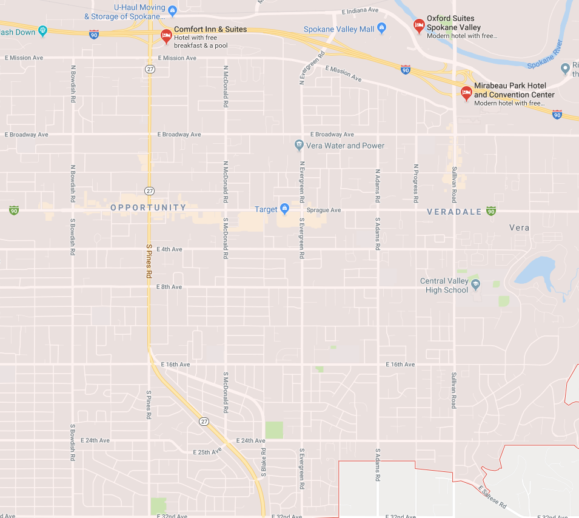

<!-- this will be the outage map along with the form to report an outage -->

  <!--button mat-button [matMenuTriggerFor]="menu">Menu</!--button>
  <mat-menu #menu="matMenu">
    <button mat-menu-item>Preparing for a Storm</button>
    <button mat-menu-item>preparing for crew arrival</button>
    <button mat-menu-item>Outage details</button>
  </mat-menu-->

<div class="outage-map">
  <div style="display:block;">
    <p>This is a plcae holder for the outage map that will use GIS</p>
    
  </div>
</div>
